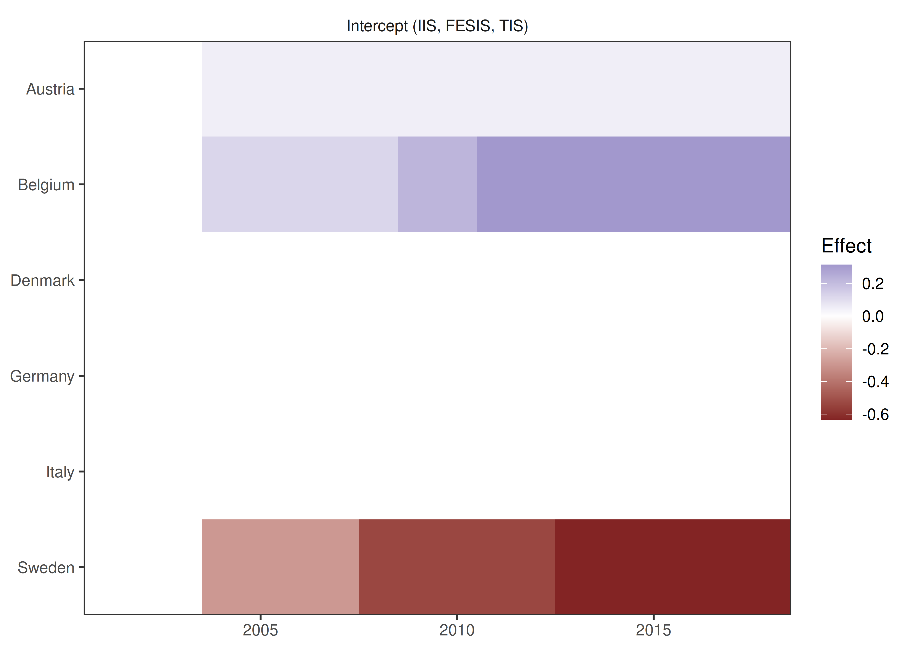
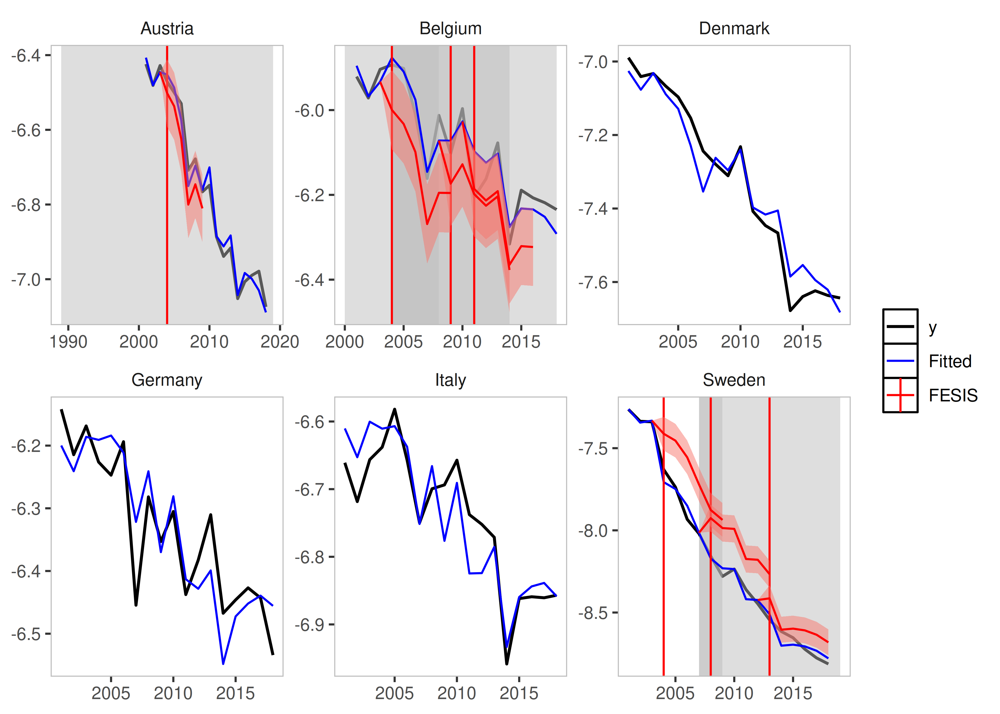
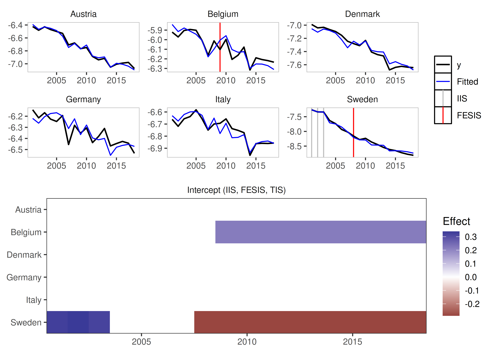
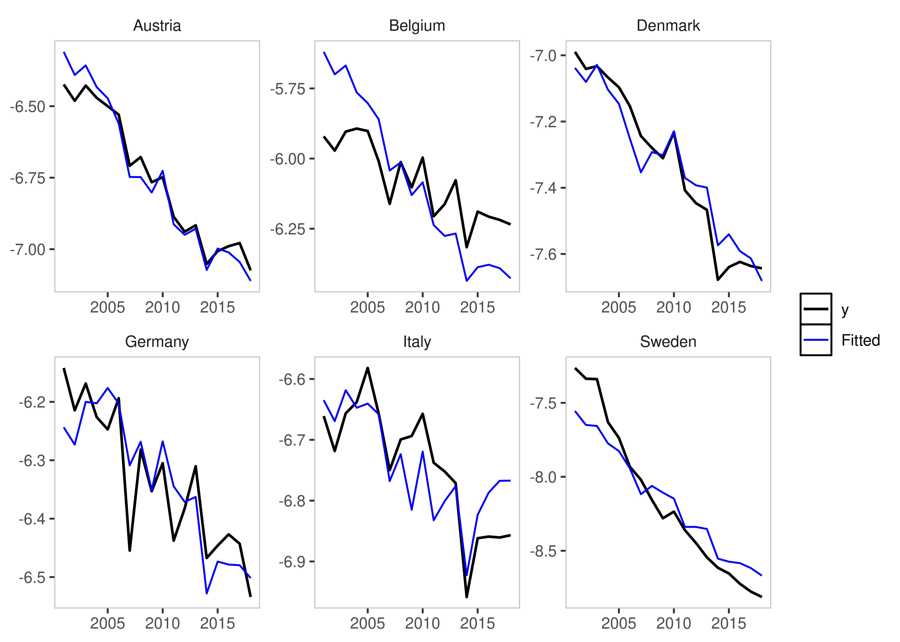
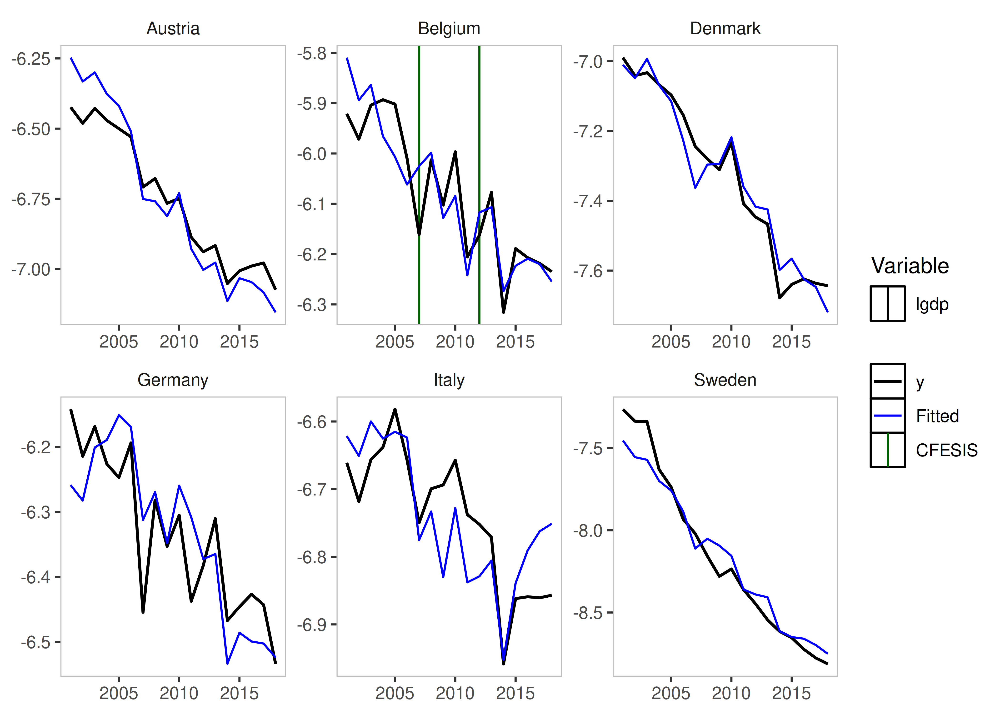
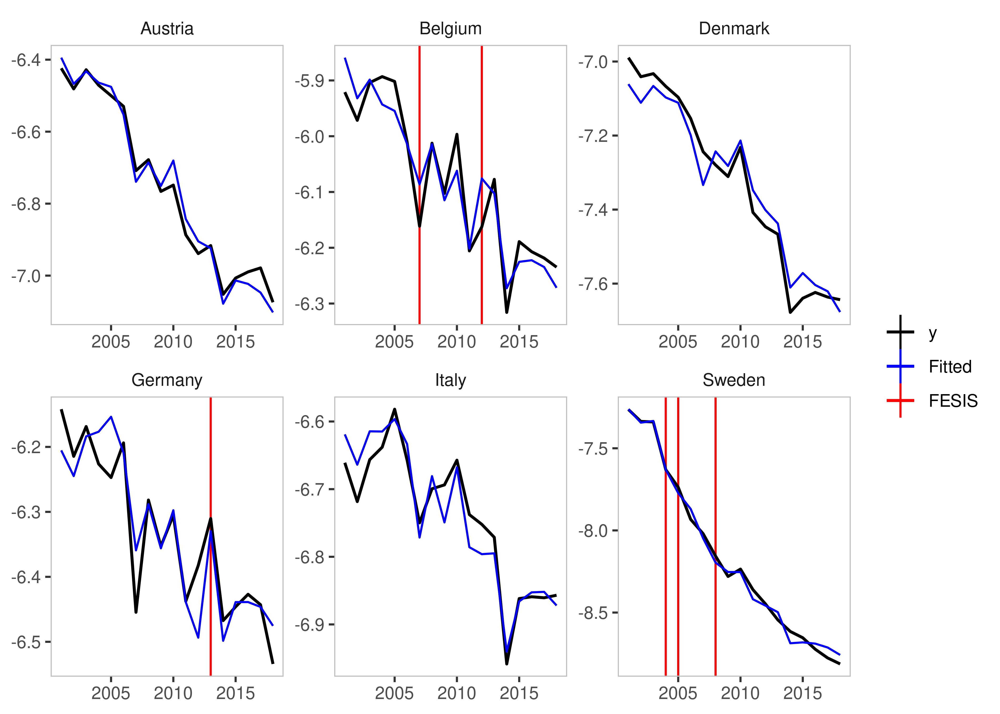

The getspanel package can be downloaded and installed
from CRAN here by simply
using:
install.packages("getspanel")The source code of the package is on GitHub and the development version can be installed using:
# install.packages("devtools")
devtools::install_github("moritzpschwarz/getspanel", ref = "devel")Once installed we need to load the library:
Currently the package is called getspanel to align with the gets package, but it’s main function of course remains the isatpanel function.
The isatpanel function implements the empirical break detection algorithm that is described in a paper by Felix Pretis and Moritz Schwarz and was applied to a study by Nico Koch and colleagues on EU Road CO2 emissions, which was published in Nature Energy in 2022.
A quick overview over what has changed:
We can now use the function approach as well as the traditional gets approach. This means that we can specify a model using
yandmxregas well astimeandidas vectors, but we can now also simply supply adata.frameand afunctionin the formy ~ x + z + I(x^2)to e.g. specify polynomials. This means we will then need anindexargument, which specifies theThe
arargument now worksWe can now use the
fixestpackage to speed up model estimation with largei(for short panels, the default method is still faster).The package can be activated using the newengineargument.Using the
fixestpackage also allows us to calculate clustered standard errors.We can now be certain that unbalanced panels would work as intended, which was not the case before.
The
mxbreakandbreak.methodarguments have been removed. Instead the function now produces the break matrix itself. This now implements the following saturation methods in a user friendly way:iis: Impulse Indicator Saturation
jsis: Joint Step Indicator Saturation (Common Breaks over time)
csis: Coefficient Step Indicator Saturation (Common Coefficient Breaks over time)
fesis: Fixed Effect Step Indicator Saturation (Breaks in the Group Fixed Effect over time)
cfesis: Coefficient Fixed Effect Step Indicator Saturation (Breaks in the coefficient for each individual)
The isatpanel function
We first load some data of EU CO2 Emissions in the housing sector.
data("EUCO2residential")
head(EUCO2residential)
[38;5;246m# A tibble: 6 × 9
[39m
country year lgdp lhdd lcdd urban av.rate pop agg.directem
[3m
[38;5;246m<chr>
[39m
[23m
[3m
[38;5;246m<dbl>
[39m
[23m
[3m
[38;5;246m<dbl>
[39m
[23m
[3m
[38;5;246m<dbl>
[39m
[23m
[3m
[38;5;246m<dbl>
[39m
[23m
[3m
[38;5;246m<dbl>
[39m
[23m
[3m
[38;5;246m<dbl>
[39m
[23m
[3m
[38;5;246m<dbl>
[39m
[23m
[3m
[38;5;246m<dbl>
[39m
[23m
[38;5;250m1
[39m Austria
[4m1
[24m969 25.6
[31mNA
[39m
[31mNA
[39m 65.2
[31mNA
[39m
[31mNA
[39m
[31mNA
[39m
[38;5;250m2
[39m Austria
[4m1
[24m970 25.7
[31mNA
[39m
[31mNA
[39m 65.3
[31mNA
[39m
[31mNA
[39m
[31mNA
[39m
[38;5;250m3
[39m Austria
[4m1
[24m971 25.8
[31mNA
[39m
[31mNA
[39m 65.3
[31mNA
[39m 7
[4m5
[24m
[4m0
[24m
[4m0
[24m482
[31mNA
[39m
[38;5;250m4
[39m Austria
[4m1
[24m972 25.8
[31mNA
[39m
[31mNA
[39m 65.3
[31mNA
[39m 7
[4m5
[24m
[4m4
[24m
[4m4
[24m201
[31mNA
[39m
[38;5;250m5
[39m Austria
[4m1
[24m973 25.9
[31mNA
[39m
[31mNA
[39m 65.3
[31mNA
[39m 7
[4m5
[24m
[4m8
[24m
[4m6
[24m115
[31mNA
[39m
[38;5;250m6
[39m Austria
[4m1
[24m974 25.9
[31mNA
[39m
[31mNA
[39m 65.3
[31mNA
[39m 7
[4m5
[24m
[4m9
[24m
[4m9
[24m038
[31mNA
[39m
# let's subset this a little bit to speed this up
EUCO2residential <- EUCO2residential[EUCO2residential$year > 2000 &
EUCO2residential$country %in% c("Germany", "Austria",
"Belgium", "Italy",
"Sweden", "Denmark"),]
# let's create a log emissions per capita variable
EUCO2residential$lagg.directem_pc <- log(EUCO2residential$agg.directem/EUCO2residential$pop)
# and let's also turn off printing the intermediate output from isatpanel
options(print.searchoutput = FALSE)Let’s look at how we input what we want to model. Each
isatpanel command takes:
Basics
- A specification of the source data, the group and time variable and the group-time characteristics. This can be entered into the function in two ways:
In the gets package style i.e. using vectors and matrices to specify
y,mxreg,timeandidBut also in a form that resembles the
lmandplmspecification i.e. inputting adata.frame(ormatrixortibble), aformulaargument as well as character vectors forindex(in the formc("group_variable_name", "time_variable_name"))
- A an argument for the Fixed Effect Specification using
effect.
This already means that the following two commands will give the same result:
Using the new method
is_lm <- isatpanel(data = EUCO2residential,
formula = lagg.directem_pc ~ lgdp + I(lgdp^2) + pop,
index = c("country","year"),
effect = "twoways",
fesis = TRUE)
Using the traditional method
is_gets <- isatpanel(y = EUCO2residential$lagg.directem_pc,
mxreg = EUCO2residential$lgdp,
time = EUCO2residential$year,
id = EUCO2residential$country,
effect = "twoways",
fesis = TRUE)From here onwards, I will use the lm notation.
Plotting
We can plot these simply using the default plotting methods (rely on the ggplot2 package):
plot(is_lm)
plot_grid(is_lm)
plot_counterfactual(is_lm)
Saturation Methods
Impulse Indicator Saturation
This argument works just as in the gets package. The
method simply adds a 0 and 1 dummy for each
observation.
Simply set iis = TRUE.
iis_example <- isatpanel(data = EUCO2residential,
formula = lagg.directem_pc ~ lgdp + I(lgdp^2) + pop,
index = c("country","year"),
effect = "twoways",
iis = TRUE,
fesis = TRUE)
plot(iis_example)Step Indicator Saturation
Traditional Step Indicator Saturation does not make sense in a panel
setting. Therefore, the gets function of
sis is disabled.
Joint Step Indicator Saturation
It is possible, however, to consider Step Indicator Saturation with
common breaks across individuals. Such indicators would be collinear, if
effects = c("twoways") or effects = c("time")
i.e. if Time Fixed Effects are included.
If, however, effect = "individual" then we can use
jsis = TRUE to select over all individual time fixed
effects.
jsis_example <- isatpanel(data = EUCO2residential,
formula = lagg.directem_pc ~ lgdp + I(lgdp^2) + pop,
index = c("country","year"),
effect = "individual",
jsis = TRUE)
plot(jsis_example)
Coefficient Step Indicator Saturation
Note: This method has only been tested using the
lm implementation (using data,
formula, and index).
This method allows detection of coefficient breaks that are common
across all groups. It is the interaction between jsis and
the relevant coefficient.
To illustrate this, as well as the advantages of using the
lm approach, we include a non-linear term of the lgdp
variable using I(lgdp^2):
csis_example <- isatpanel(data = EUCO2residential,
formula = lagg.directem_pc ~ lgdp + I(lgdp^2) + pop,
index = c("country","year"),
effect = "twoways",
csis = TRUE)
plot(csis_example)By default, all coefficients will be interacted and added to the
indicator list - but his can be controlled using the
csis_var, which takes a character vector of column names
i.e. csis_var = "lgdp".
csis_example2 <- isatpanel(data = EUCO2residential,
formula = lagg.directem_pc ~ lgdp + I(lgdp^2) + pop,
index = c("country","year"),
effect = "twoways",
csis = TRUE,
csis_var = "lgdp")
Fixed Effect Step Indicator Saturation
This is equivalent to supplying a constant to the mxbreak argument in the old method. This essentially breaks the group-specific intercept i.e. the individual fixed effect.
fesis_example <- isatpanel(data = EUCO2residential,
formula = lagg.directem_pc ~ lgdp + I(lgdp^2) + pop,
index = c("country","year"),
effect = "twoways",
fesis = TRUE)
plot(fesis_example)
Similar to the csis_var idea, we can specify the
fesis method for a subset of individuals as well using the
fesis_id variable, which takes a character vector of
individuals. In this case we can use
e.g. fesis_id = c("Austria","Denmark").
fesis_example2 <- isatpanel(data = EUCO2residential,
formula = lagg.directem_pc ~ lgdp + I(lgdp^2) + pop,
index = c("country","year"),
effect = "twoways",
fesis = TRUE,
fesis_id = c("Austria","Denmark"))
plot(fesis_example2)Coefficient Fixed Effect Step Indicator Saturation
This method combines the csis and the fesis
approach and detects whether coefficients for individual units break
over time.
This means we can also combine the subsetting in both the variable
and in the individual units using cfesis_id and
cfesis_var.
cfesis_example <- isatpanel(data = EUCO2residential,
formula = lagg.directem_pc ~ lgdp + I(lgdp^2) + pop,
index = c("country","year"),
effect = "twoways",
cfesis = TRUE,
cfesis_id = c("Belgium","Germany"),
cfesis_var = "lgdp",
t.pval = 0.001)
plot(cfesis_example)The ar argument
It is now possible to specify an argument to include autoregressive
coefficients, using the ar argument.
Post-selection robustness
The options for the robust_isatpanel are to use HAC
Standard Errors, use a standard White Standard Error Correction (with
the option of clustering the S.E. within groups or time):
robust_isatpanel(fesis_ar1_example, HAC = TRUE, robust = TRUE, cluster = "group")
Error in solve.default(crossprod(demX)): system is computationally singular: reciprocal condition number = 9.93268e-18The engine argument
Another new argument is also the engine argument. This
allows us to use an external package to estimate our models. At this
stage, the fixest package can be used.
This also means that we can now use an argument to cluster Standard
Errors using cluster.
fixest_example <- isatpanel(data = EUCO2residential,
formula = lagg.directem_pc ~ lgdp + I(lgdp^2) + pop,
index = c("country","year"),
effect = "twoways",
fesis = TRUE,
engine = "fixest",
cluster = "none")We can verify that, using no clustering of Standard Errors at all, using the fixest package does not change our estimates:
head(fixest_example$isatpanel.result$mean.results)
coef std.error t-stat p-value
lgdp -2.371189e+01 2.914939e+00 -8.13461036 6.615453e-12
I(lgdp^2) 4.088169e-01 5.271872e-02 7.75468191 3.491379e-11
pop -1.300282e-09 1.461405e-08 -0.08897482 9.293391e-01
fesisAustria.2004 4.972763e-02 4.597850e-02 1.08154087 2.829219e-01
fesisBelgium.2004 1.232366e-01 4.756271e-02 2.59103348 1.149348e-02
fesisBelgium.2009 1.010547e-01 5.105385e-02 1.97937523 5.144411e-02Compared to the default estimator:
head(is_lm$isatpanel.result$mean.results)
coef std.error t-stat p-value
lgdp -2.371189e+01 2.914939e+00 -8.13461036 6.615453e-12
I(lgdp^2) 4.088169e-01 5.271872e-02 7.75468191 3.491379e-11
pop -1.300282e-09 1.461405e-08 -0.08897482 9.293391e-01
idBelgium 8.715540e-01 9.241906e-02 9.43045775 2.269246e-14
idDenmark -8.793057e-01 8.029376e-02 -10.95110838 3.232923e-17
idGermany 2.730805e+00 1.614286e+00 1.69164900 9.486428e-02However, changing the cluster specification of course
does. The Standard Error correction with it’s current
implementation is not valid, so allows for many more indicators than
true - clustering is therefore currently not recommended.
fixest_example_cluster <- isatpanel(data = EUCO2residential,
formula = lagg.directem_pc ~ lgdp + I(lgdp^2) + pop,
index = c("country","year"),
effect = "twoways",
fesis = TRUE,
engine = "fixest",
cluster = "individual")
plot(fixest_example_cluster)